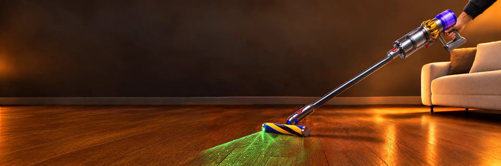
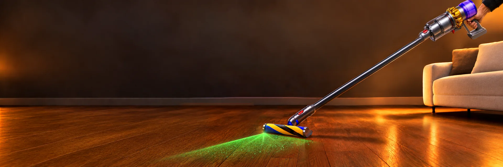
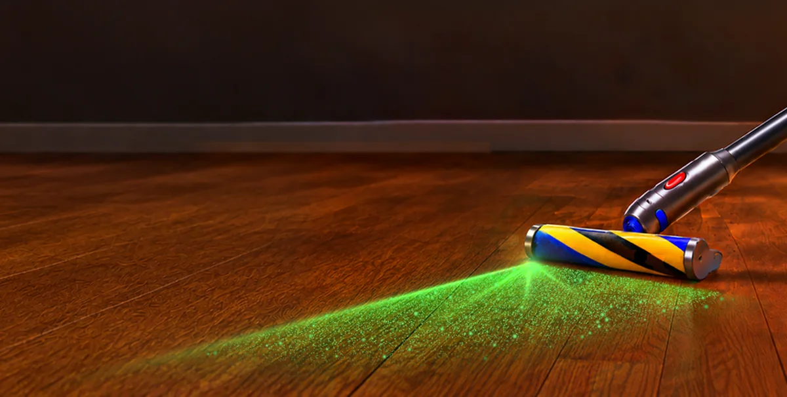
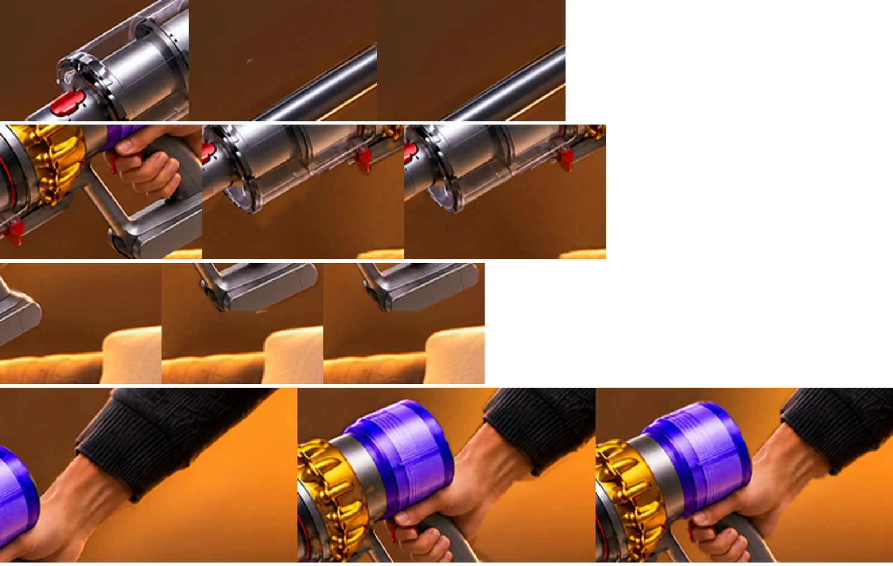
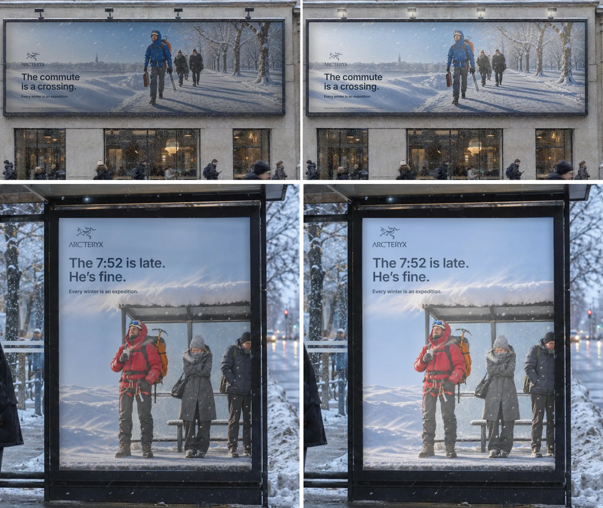
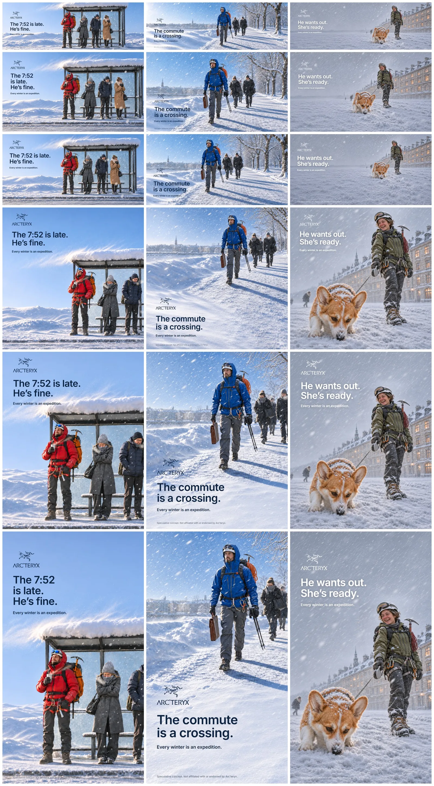
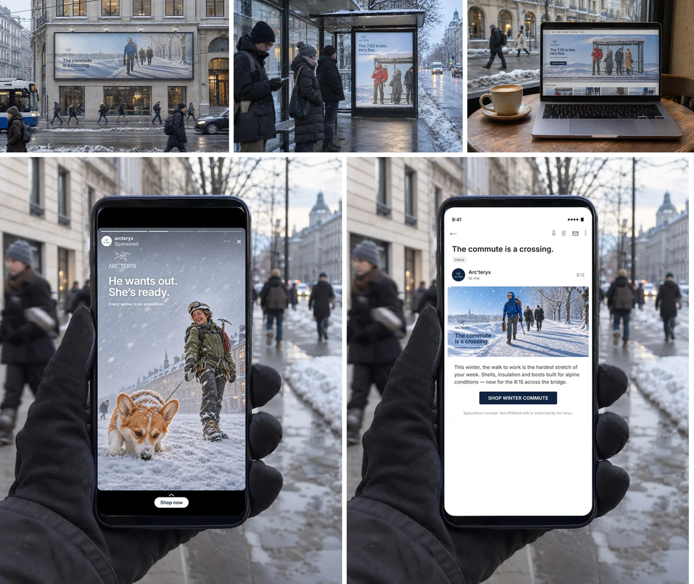

AI pipeline
Опыт команды остаётся в компании и с каждой задачей работает лучше.
- Опыт остаётсяШаги, правила и удачные примеры лежат в типовой задаче. Их получает каждый, кто её берёт.
- Меньше правокПосле норм и чек-листов на типовую задачу приходится 0,7 правки вместо 2,4.
- Видна цена работыНорма часов на каждый тип задачи считается по закрытым задачам. План и факт по 82 задачам: 1 098 и 1 001 час.
- Новичок входит быстрееОн начинает с журнала задачи и примеров, а не с расспросов.
У меня это работает в Notion и собирается автоматизацией. Переносится на любую базу, где команда ведёт задачи.
AI_PIPELINE_/_01
Пайплайн собран под команду
Я заготавливаю приёмы, знание продукта и стиль компании, скиллы и типовые задачи. Знание копится у типовых задач и переходит между сотрудниками и командами.
Наполняют его сами сотрудники: с Claude или со мной они дописывают приёмы, знание продукта и аудитории, стиль коммуникации компании.
Картинку генерирует ChatGPT Images 2.6, ретушь ведёт Claude. Он учится по ходу работы: у него прибавляются инструменты правки и опыт.
Приёмысвет, кадр, ретушь
Продукт и аудиториякак устроен, кто покупает
Стиль компаниитон, бренд-кит, персонажи
Скиллыправила и журнал опыта
Типовые задачибаннер · мокап · ресайз
Сотрудник 1берёт задачу с готовым знанием
Сотрудник 2другой сюжет, тот же продукт
Другая командадругой формат, те же правила
Сотрудники пополняют знание сами — с Claude или со мной
AI_PIPELINE_/_02
Типовые задачи и их метрики
В базе задач дизайн-отдела RAWMID 1 171 задача. Они сведены к 33 типовым, у каждой своя норма часов.
Норма — медиана по закрытым задачам, она пересчитывается с каждой новой. Видно, где повторяются правки и сколько стоит каждый тип работы.
1 171задача↓33типовые
- Полиграфия176 задач
- Обложки для видео140 задач4,5 ч
- Плашки для видео133 задачи2,5 ч
- Тексты для постов30 задач3,5 ч
Обложка YouTube
2,6–8,5 ч- 5
- шагов
- 2
- правила
- 15
- удачных примеров
Нейросеть подтягивает их в каждую новую обложку и отвечает дизайнеру по этому гайду.
AI_PIPELINE_/_03
Dyson: сложная ретушь
Самая трудоёмкая работа в пайплайне — рекламный концепт Dyson V15: зелёный лазер на полу, рука и пропорции пылесоса, чистка кадра. До принятого широкого кадра — около шестидесяти кругов.
Генерация — ChatGPT Images 2.6, ретушь — Claude. За этот концепт у Claude появились свои инструменты правки: свет лазера, пылинки, поворот и масштаб корпуса, маска предмета SAM 2.
Образцом стал кадр второго ракурса. Каждое замечание мы сначала переводили в число на образце, потом правили и мерили снова.

AI_PIPELINE_/_04
Лазер, рука и пропорции
Лазер прошёл двадцать версий за два дня: одна правка ломала уже принятое. С тех пор принятое — проверка, которую проходит каждая новая версия. Свет идёт веером от луча и гаснет к другому краю, пылинки бледнеют вдаль: на образце 700–800 мелких и 35–70 крупных на 10 тысяч пикселей луча.
Корпус в разных форматах вышел разного размера, рука согнулась в локте, труба надломилась у стыка. Пропорции сверены с фото продукта, ось трубы проверяется прямой. Предмет выделяю маской SAM 2: стена за ним заливается заново, кромки рукоятки и колбы не срезаются.


AI_PIPELINE_/_05
Как знание переходит дальше
Каждая правка записывается в журнал опыта со статусом: сказано один раз, подтвердилось, снято. Подтверждённое становится правилом скилла, и следующий кадр начинается с него.
Знание продукта, собранное на лазере и пропорциях, работает в других сюжетах и форматах: широкий баннер, вертикаль, пост, сторис, письмо.
Журнал лежит рядом с работой. Кто берёт типовую задачу, начинает с него.
Новичок берёт типовую задачу и сразу получает журнал и примеры. Опыт не уходит вместе с людьми.
- Сказано один раз
- Подтвердилось
- Правило скилла
- Следующая задача начинается с него
AI_PIPELINE_/_06
Arc'teryx: качество фото и масштаб
Второй пример — рекламный концепт Arc'teryx. Здесь задача другая: качество фотографии и масштаб. Из каждого из трёх сюжетов скрипт собирает шесть форматов, мокапы вписываются по замеренным углам носителя.
За цикл вышло 18 макетов и пять мокапов. Тест не запускался.
Правки по свету и снегу записаны приёмами: графика на светлом месте кадра тёмно-синяя, место под текст закладывается до генерации, у объектива два-четыре крупных хлопья.


